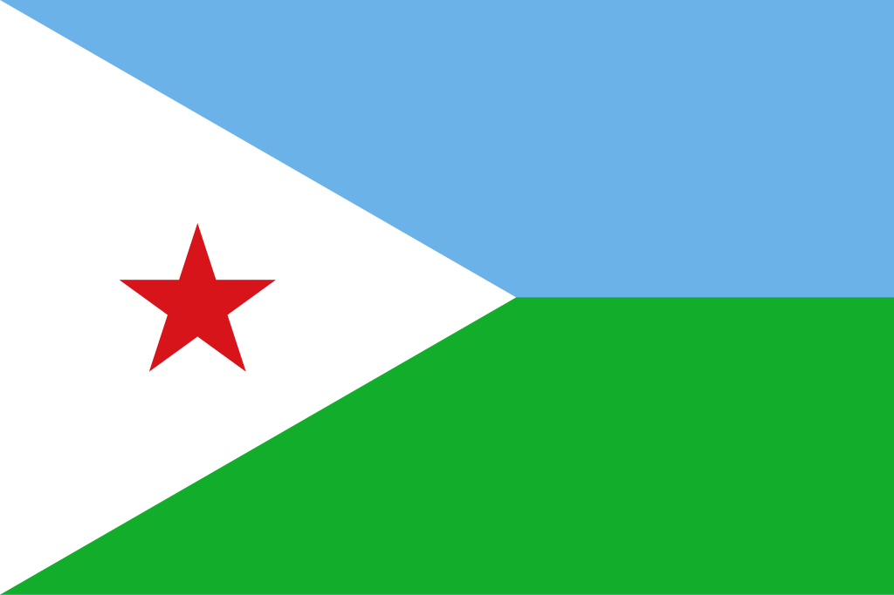

Djibuti
 Djibuti, oficialmente República do Djibuti, é um pequeno país localizado no Chifre da África, fazendo fronteira com a Eritreia ao norte, a Etiópia a oeste e sul, e a Somália ao sudeste, além de ser banhado pelo Mar Vermelho e pelo Golfo de Áden. Possui uma área de cerca de 23.200 km² e uma população estimada em 1 milhão de habitantes. Sua capital, Djibuti, concentra a maior parte da população e é o centro político, econômico e cultural do país. Devido à sua posição geográfica estratégica, Djibuti é considerado um ponto-chave para o comércio marítimo e abriga bases militares de várias potências mundiais. A população é composta principalmente por dois grupos étnicos: os somalis e os afars. A língua oficial é o francês e o árabe, mas as línguas locais somali e afar também são amplamente faladas.
História
A região de Djibuti é habitada há milhares de anos por povos pastores e comerciantes que participaram ativamente das rotas comerciais entre a África, o Oriente Médio e a Ásia. Com a chegada dos árabes no século VII, o Islã foi introduzido e rapidamente adotado pela população local. No século XIX, a França estabeleceu domínio sobre a região, transformando-a em colônia sob o nome de Somalilândia Francesa, mais tarde renomeada como Território Francês dos Afars e Issas. Esse domínio consolidou Djibuti como porto estratégico para o comércio e para o controle das rotas do Mar Vermelho.
Djibuti conquistou sua independência da França em 27 de junho de 1977, tornando-se a República do Djibuti. Desde então, o país tem mantido estabilidade política relativa, embora enfrente desafios relacionados à pobreza, desemprego e dependência econômica externa. Sua localização estratégica atraiu a instalação de bases militares internacionais, o que contribui para sua relevância geopolítica.
Cultura
A cultura de Djibuti é fortemente marcada pelas tradições somalis e afars, além das influências árabes e francesas. O Islã é a religião predominante e molda diversos aspectos da vida social e cultural. As línguas oficiais são o árabe e o francês, herança do período colonial, mas as línguas locais, como somali e afar, também são amplamente usadas no cotidiano.
A música tradicional, as danças e a poesia oral desempenham papel essencial, transmitindo histórias, ensinamentos e identidades coletivas. A culinária mistura influências africanas, árabes e etíopes, com pratos como arroz com especiarias, carnes grelhadas e ensopados. O chá e o café são bebidas centrais na vida social. O artesanato, incluindo bordados, cestarias e objetos de couro, também faz parte da identidade cultural e do comércio local.

Clima
O clima de Djibuti é desértico e extremamente árido, caracterizado por temperaturas muito elevadas durante quase todo o ano. No verão, os termômetros frequentemente ultrapassam os 40 °C, especialmente no interior, enquanto as regiões costeiras apresentam calor intenso acompanhado de alta umidade. As chuvas são raras e irregulares, ocorrendo em pequenas quantidades entre novembro e março. Essa escassez hídrica limita a agricultura e torna o país dependente de importações de alimentos.
Apesar da aridez, a localização costeira de Djibuti confere grande importância às suas águas marinhas, que influenciam o clima local e oferecem recursos para a pesca. Os ventos sazonais e as correntes marítimas também afetam o regime climático e a vida econômica, especialmente nas atividades portuárias.
Biodiversidade
A biodiversidade terrestre de Djibuti é relativamente limitada, composta por espécies adaptadas ao clima árido, como cabras selvagens, antílopes, répteis e aves do deserto. Entretanto, a verdadeira riqueza natural do país está em sua biodiversidade marinha. O Golfo de Tadjoura e o Mar Vermelho abrigam recifes de corais, golfinhos, tubarões-baleia e uma grande variedade de peixes tropicais, tornando a região importante para o ecoturismo e a preservação ambiental.
A flora é composta por vegetação desértica resistente, incluindo acácias e arbustos. O governo e organizações internacionais têm buscado iniciativas de conservação, especialmente voltadas para os ecossistemas marinhos, que sofrem com os efeitos da poluição e das mudanças climáticas.


Cidades
A capital, Djibuti, é a maior e mais importante cidade do país, concentrando atividades políticas, econômicas e culturais. Seu porto é vital para o comércio internacional, especialmente para a Etiópia, que depende dele para suas importações e exportações. A cidade também abriga bases militares estrangeiras, universidades, mercados tradicionais e modernos, além de ser o principal ponto de entrada do turismo no país.
Outras cidades relevantes incluem Ali Sabieh, localizada no sul, conhecida como centro ferroviário e comercial, e Tadjoura, uma das cidades mais antigas, com importância histórica e cultural ligada ao comércio marítimo. Obock, situada ao norte, também possui relevância histórica e estratégica. Essas cidades, embora menores, complementam o papel da capital e ajudam a manter a diversidade regional de Djibuti.